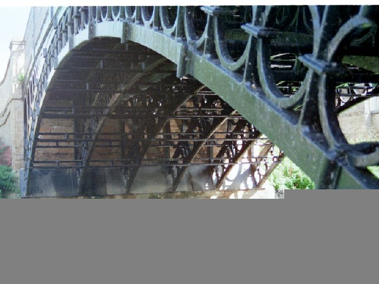

©Richard Foxcroft 2001
Last summer, a friend who is a structural engineer sent me an article about the strengthening of the 1810 cast-iron Tickford Bridge, Newport Pagnall, Northamptonshire, because he knows of my interest in such things. This restoration was a remarkable piece of workmanship using the latest carbon fibre technology; but I took one look at the picture and became sure that there must be a link between this bridge and those in Shropshire built by Thomas Telford.
First, let's get some history sorted. The first iron bridge in the world was that still standing but now closed to vehicles at Ironbridge, built by Abraham Darby III in 1770: there's no dispute about that. The oldest still open to traffic is that at Cound Arbour, a few miles away, built in 1797. This is earlier than that at Tickford, built in 1810, whatever you may read to the contrary elsewhere: though that much larger bridge may justly claim to be the oldest on a "classified road", "main road" or if you are American, "highway".
Now to business. Compare the pictures:
| Cound Arbour Bridge | Tickford Bridge |
Note the similarity of the shape of the arch, and the rings used as both strenghening and ornamentation of the sides. Look underneath and compare the structure, and the way the metal is jointed like wood:
|
|  |
| Cound Arbour Bridge | Tickford Bridge |
Yet I have not been able to trace a direct connection between the two. Cound Arbour Bridge was designed by Thomas Telford, and built by the Coalbrookdale Company. Tickford Bridge is by Thomas Wilson and was built by Walkers of Rotherham. It is true (see http://www.history.rochester.edu/steam/lord/8.htm) that Boulton and Watt built engines for Reynolds, both at Coalbrookdale and at Ketley, and for Walkers of Rotherham; but for a time they had a monopoly, and built for everyone, so it is unsafe to conclude that they were a bridge between the Rotherham and Coalbrookdale foundries; and anyway, the founders were not the designers.
Walkers had been building iron bridges for twenty years when they built the Tickford bridge. Tom Paine patented a design in 1788, and had made models before that; and he immediately reached an agreement with the firm of Samuel Walker & Co of Rotherham to cast an experimental 250-foot arch in either wrought or cast iron (the site I quoted that from is now defunct). This bridge was exhibited at Paddington temporarily, and then the steel was recovered by Walkers on the bankruptcy of Payne's backer; but another Walker bridge was built in Jamaica . During these years Telford had been active as what we would now call a Civil Engineer, and undoubtedly all these pioneers were aware of each others' work; but who learned what from whom?
The Tickford bridge must have created far more headaches in its transportation than the Cound Arbour bridge, and not only because it was bigger. Whereas the Shropshire one was erected a few miles from Coalbrookdale, Tickford bridge was built in sections by Walker's of Rotherham and the sections were transported first by ship to London then by narrowboat to Great Linford. They finished their journey by road, because the Newport Pagnell canal from Great Linford to the west side of the town wasn't completed until 1817. Quite a journey.
A view from upstream with the town behind
Looking directly downstream over the top
A closeup of the date cast into the top of the arch
External link to an excellent black-and white photo
{kind=link}
{kind=link}
{kind=link}